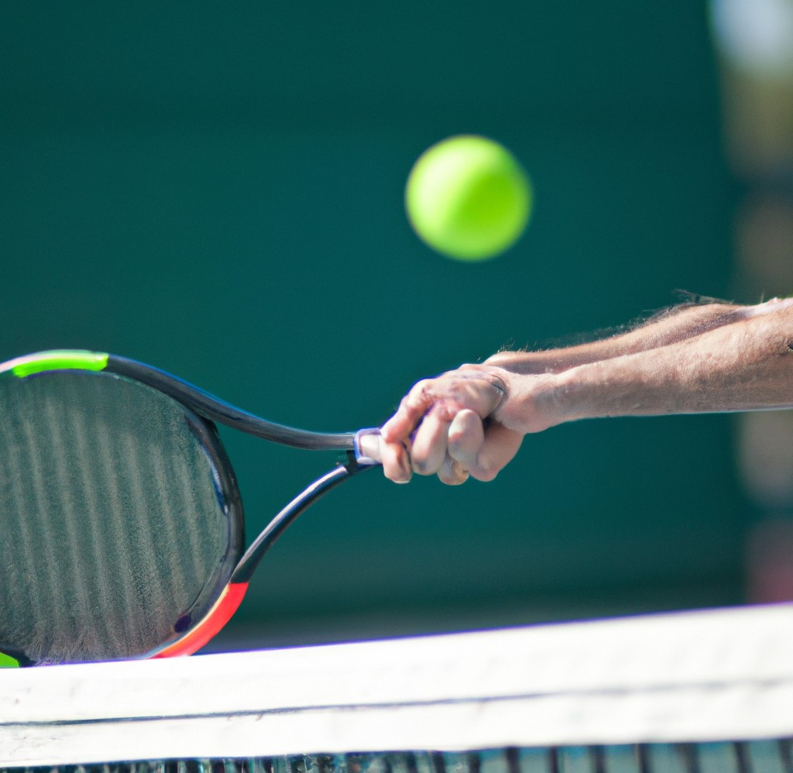

Lawn Tennis is a popular sport invented in Birmingham, England, played individually or in teams. It involves hitting a ball over a net using a racket.
The game requires agility, strategy, and quick reflexes.
Major tournaments include the Grand Slam events and the ATP/WTA Tour.
Tennis is played everywhere in the world. Exactly 88 million people play this game. Tennis can be played on different surfaces such as grass, clay, or hard court, each of which affects the speed and bounce of the ball.
Matches are typically played in sets, with each set consisting of games, and the first player or team to win a specified number of sets wins the match.
Tennis is a game which offers opportunities for exercise, social interaction, and personal development while providing a platform for individuals to showcase their skills and passion for the game.

I have always considered tennis as a combat in an arena between two gladiators who have their rackets and their courage as their weapons.